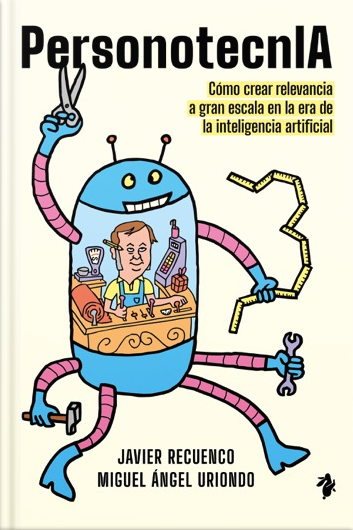

Prólogos de Miguel Arias (ex-CDO Telefónica) y José Rubén Gallardo (MAPFRE)
Tu tienda sabe todo lo que le compraste y aun así te recomienda el abrigo que ya tienes. Las empresas confunden acumular datos con conocer a la gente, y la IA lo ha agravado. La personotecnia propone que toda una empresa se comporte como un buen tendero de barrio: relevancia a gran escala. Con humor y casos reales (Telefónica, Mercadona, Pepephone, Netflix, Spotify, MrBeast) y el papel de los agentes de IA.
⭐ Goodreads · Amazon: no encontrado — publicado hace una semana, aún sin reseñas.
No es ciencia ficción ni anticipación social: es ensayo de negocio sobre personalización e IA. Pero te toca de lleno en lo profesional (gestión de proyectos, consultoría y formación en IA) y su tesis de agentes de IA y "tratar a las personas como personas" dialoga con Tiempo de futuros o Agency. Útil y ameno; no te dará la chispa de una distopía.